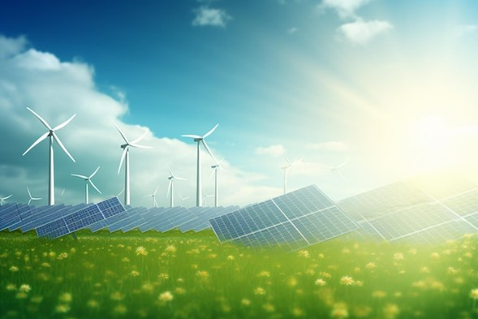

Generacion Renovable
Historia de las Energías Renovables: De los Inicios a la Revolución Energética
Desde mediados del siglo XX, las energías renovables han evolucionado de soluciones experimentales a pilares fundamentales en la transición energética global.
- 1960s-1980s: Las primeras iniciativas destacaron por la inauguración de la planta mareomotriz de La Rance en Francia (1966) y el crecimiento de la energía eólica en Dinamarca. La crisis del petróleo en los años 70 despertó el interés por alternativas sostenibles.
- 1990s: Con el Protocolo de Kioto (1997), las energías limpias comenzaron a expandirse comercialmente, mientras la tecnología solar y eólica avanzaba, reduciendo costos.
- 2000s: La producción masiva y la innovación tecnológica aceleraron el crecimiento de renovables, alcanzando la paridad de costos con los combustibles fósiles en varias regiones.
- 2010s-2020s: Las renovables ahora lideran la transformación energética global, con tecnologías como el hidrógeno verde y una capacidad que ya supera el 35% de la generación eléctrica mundial.
Hoy, las energías renovables son el centro de la lucha contra el cambio climático, impulsando un futuro más limpio y sostenible.
